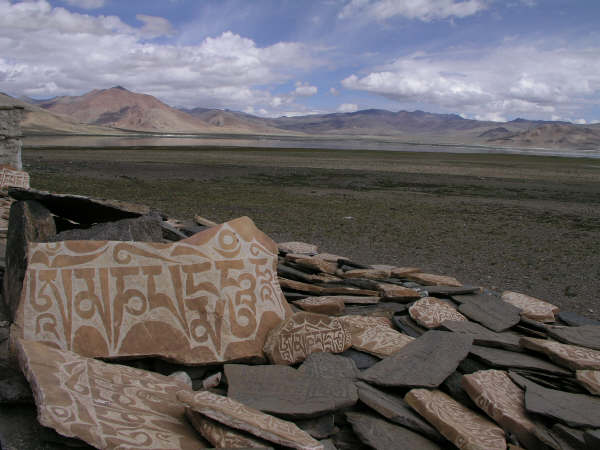
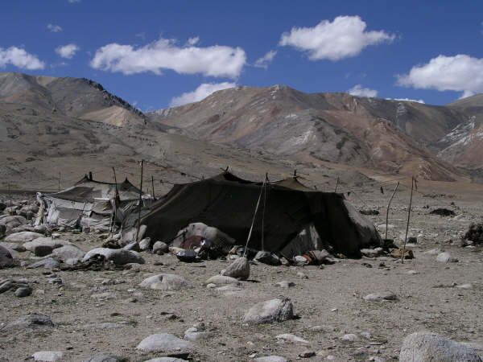
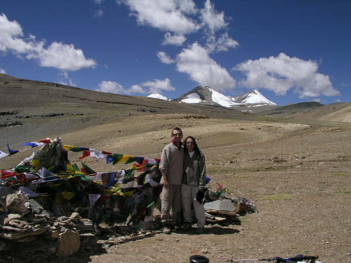
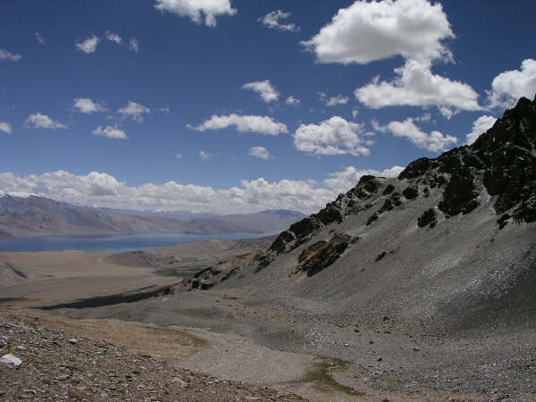
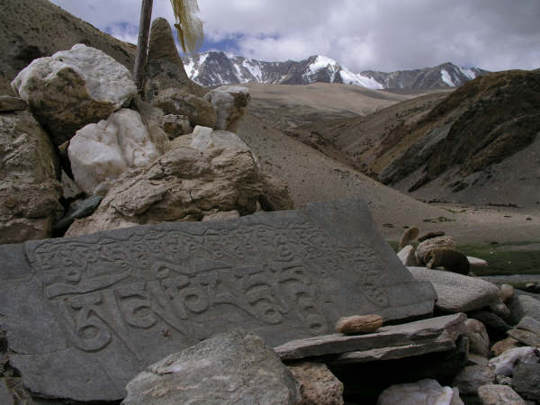
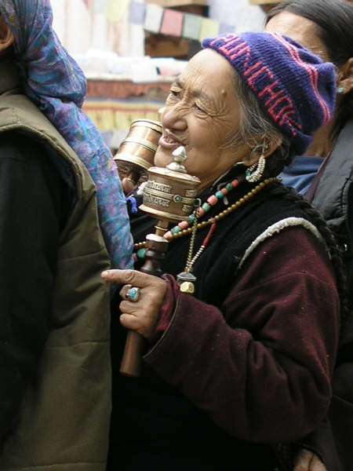

Gasping for breath IV: Hardcore trekking
Tsomoriri and beyond, India
Well, we bought the sleeping bags to keep us snug down to minus 10 degrees and on this last trek we really tested them! On the morning of day five we woke just after sunrise to discover the outside of the tent frozen and the mercury reading minus 6 degrees!!
This final trek - called a high altitude trek - was a real challenge taking us from Rumtse to Tsomoriri. Seven passes in 5 days - the highest being around 17,500 ft - never dipping below 14,000ft and one night camping just below 17,000 ft. In fact, a couple of days before, when we saw the final itinerary, we were almost ready to back out because we weren't sure whether we were really fit enough for this sort of stuff. But, we went...
The trek was really hard, but every time we got to the top of a pass and looked out at the wonderful vistas all around it made all the effort completely worth it. There was so much we saw on this trip that could only have been seen through sheer human steam and although this was the only trek on which all our limbs burned and ached at some point or another it was SO worth the effort.
On some nights we camped next to nomads - and sometimes by the time morning came our neighbours had moved on and someone new was in their place setting up home. We popped in to meet one set of neighbours who kept on filling our cups with salt tea and sold us a a big chunk of deemo cheese (deemo is a female yak - so don't ever be fooled when someone tries to sell you yak's cheese!)
The trek took us to a small village on Tsomoriri Lake called Korzok where we set up camp for a couple of nights. We couldn't believe our luck when we found out that Korzok Gompa (monastery) was hosting a 7-day puja and so on both days we found ourselves sitting on the floor of the gompa amidst nomads who had travelled in from all over the region to take part. The monks chanted throughout, drunk salt tea, beat drums, rung bells and whenever they were quiet the congregation continued to spin their prayer wheels and gently recite the mantra - Om Mani Padme Hum. It was gentle and relaxing and a wonderful way to sooth our tired bodies after 7 days of high altitude trekking.
This final trek - called a high altitude trek - was a real challenge taking us from Rumtse to Tsomoriri. Seven passes in 5 days - the highest being around 17,500 ft - never dipping below 14,000ft and one night camping just below 17,000 ft. In fact, a couple of days before, when we saw the final itinerary, we were almost ready to back out because we weren't sure whether we were really fit enough for this sort of stuff. But, we went...
The trek was really hard, but every time we got to the top of a pass and looked out at the wonderful vistas all around it made all the effort completely worth it. There was so much we saw on this trip that could only have been seen through sheer human steam and although this was the only trek on which all our limbs burned and ached at some point or another it was SO worth the effort.
On some nights we camped next to nomads - and sometimes by the time morning came our neighbours had moved on and someone new was in their place setting up home. We popped in to meet one set of neighbours who kept on filling our cups with salt tea and sold us a a big chunk of deemo cheese (deemo is a female yak - so don't ever be fooled when someone tries to sell you yak's cheese!)
The trek took us to a small village on Tsomoriri Lake called Korzok where we set up camp for a couple of nights. We couldn't believe our luck when we found out that Korzok Gompa (monastery) was hosting a 7-day puja and so on both days we found ourselves sitting on the floor of the gompa amidst nomads who had travelled in from all over the region to take part. The monks chanted throughout, drunk salt tea, beat drums, rung bells and whenever they were quiet the congregation continued to spin their prayer wheels and gently recite the mantra - Om Mani Padme Hum. It was gentle and relaxing and a wonderful way to sooth our tired bodies after 7 days of high altitude trekking.

A Mani wall alongside Tsokar (Salt Lake)

Looking back at the rains over Tsokar

Nomads camping nearby at Korzok Dog

Some nomad kids who came to have a look at the funny people camping at this altitude for fun rather than neccessity!

A fantastic vista!

Our final pass just before Tsomoriri

Our first view of Tsomoriri

Looking towards Spiti from Tsomoriri

The last day of our trek

Nomads on pilgrimage at Korzok

Pilgrims come to seek a blessing from the Rinpoche of Stakna Gompa

Nathan, Sue and Namgial after enjoying some beers over Leh on our last day.